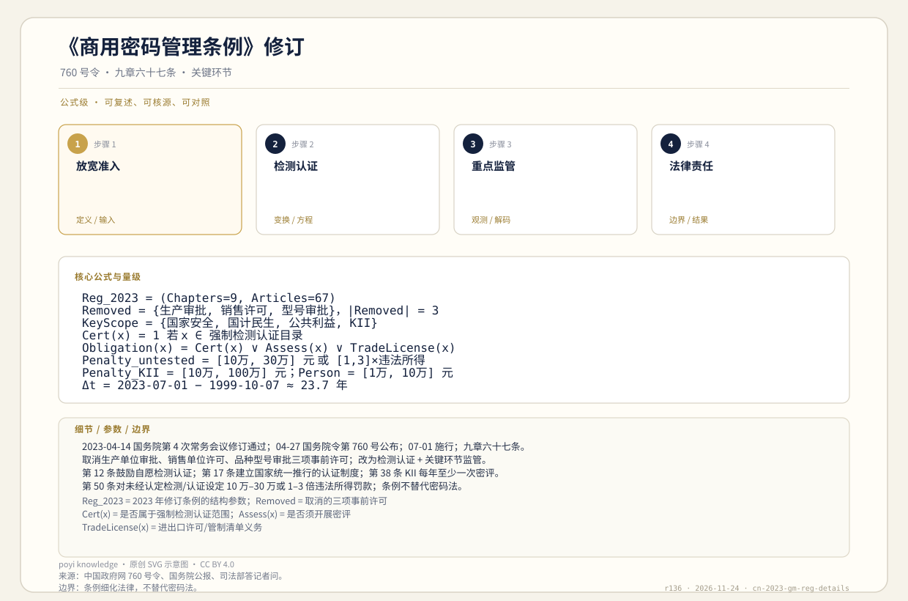

原理与机制
中国密码史：《商用密码管理条例》修订（Revised Commercial Cryptography Regulation）。2023 年《商用密码管理条例》是对 1999 年国务院令第 273 号的全面修订：1999 年 10 月 7 日发布，2023 年 4 月 14 日国务院第 4 次常务会议修订通过，4 月 27 日国务院令第 760 号公布，7 月 1 日施行。全文九章六十七条，结构从总则、科技创新与标准化、检测认证、电子认证、进出口、应用促进、监督管理、法律责任到附则。修订的核心是“放宽准入 + 关键环节监管”。它取消了原条例的生产单位审批、销售单位许可、品种型号审批三项事前许可，改为检测认证制度；第 12 条鼓励自愿检测认证，第 17 条建立国家统一推行的商用密码认证制度；对涉及国家安全、国计民生、社会公共利益的商用密码产品，以及使用网络关键设备和网络安全专用产品的商用密码服务，实行强制检测认证。第 38 条要求 KII 运营者使用商用密码保护，制定应用方案，同步规划、建设、运行，自行或委托检测机构开展密评，通过后方可投入运行，运行后每年至少一次。把许可集合写成 Removed = {生产审批, 销售许可, 型号审批}，就能看到“取消三项”不是抽象口号；把义务写成 Obligation(x)=Cert(x)∨Assess(x)∨TradeLicense(x)，就能把产品认证、KII 密评和进出口许可分开，避免把三类义务混成一项。

为什么重要
修订条例解决的是 1999 年全链条专控与当前市场、技术、开放环境不匹配的问题。旧条例要求科研、生产、销售、使用、进出口都事前审批，企业上市周期长、准入成本高；新条例把事前审批压缩到关键环节，把更多资源放到事中事后监管、检测认证和 KII 保护上。但它不是简单“放松”：对关键产品和服务仍保留强制检测认证，对 KII 仍保留年度密评，对进出口仍保留清单管理，对违法行为仍保留罚款。它的逻辑是“放得开、管得住”：一般商用密码活动降低门槛，关键场景提高安全要求。这也是公式里 KeyScope 与 Cert(x) 同时存在的原因。
应用与实例
使用条例时，先判断对象：是普通商用密码产品/服务，还是涉及国家安全、国计民生、社会公共利益的 key 产品/服务？前者以自愿检测认证为主，后者强制检测认证。再判断场景：是否 KII？如果是，按第 38 条做同步规划、建设、运行和年度密评。最后判断贸易：是否属于进出口许可/管制清单？如果是，按第 31–32 条办理。这张三列表可以写成：产品/服务 → Cert(x)；KII 应用 → Assess(x)；进出口 → TradeLicense(x)。三者可以叠加，但不能互相替代：拿到产品认证不等于 KII 密评通过，KII 密评通过也不等于进出口许可。
边界与攻击面
条例的边界有三层。第一，它是行政法规，不是法律；密码法仍然是上位法，条例只能细化不能替代。第二，放宽准入不等于零监管：关键产品服务强制检测认证，KII 强制年度密评，进出口清单管理仍在；第 50 条对未经认定开展检测/认证设定 10 万–30 万或 1–3 倍违法所得罚款，第 54 条对 KII 未评估等设定 10 万–100 万罚款。第三，条例不保证系统安全：检测认证和密评是合规性、正确性、有效性检查，不是对具体实现的无漏洞证明。
历史与背景
1999 年 10 月 7 日，国务院令第 273 号发布《商用密码管理条例》，建立全链条专控。2023 年 4 月 14 日，国务院第 4 次常务会议修订通过；4 月 27 日，国务院令第 760 号公布；7 月 1 日施行。司法部、国家密码管理局在 5 月 24 日发布答记者问，说明取消三项许可、建立检测认证、强化 KII 评估等修订思路。
逐步示例与核验
事件时间线模型
背景 → 过程 → 结果 → 争议。背景写此前技术/制度；过程写可核参与者与时间；结果写后续标准、机器、课程或政策；争议写二手叙述与一手材料的差距。
参考出处
- Wikipedia search entry for 《商用密码管理条例》修订. https://zh.wikipedia.org/w/index.php?search=%E3%80%8A%E5%95%86%E7%94%A8%E5%AF%86%E7%A0%81%E7%AE%A1%E7%90%86%E6%9D%A1%E4%BE%8B%E3%80%8B%E4%BF%AE%E8%AE%A2
- 《密码简史：穿越远古 展望未来》（杨义先、钮心忻，电子工业出版社，2020，ISBN 9787121398711）. https://book.cppinfo.cn/Encyclopedias/home/index?id=3730464